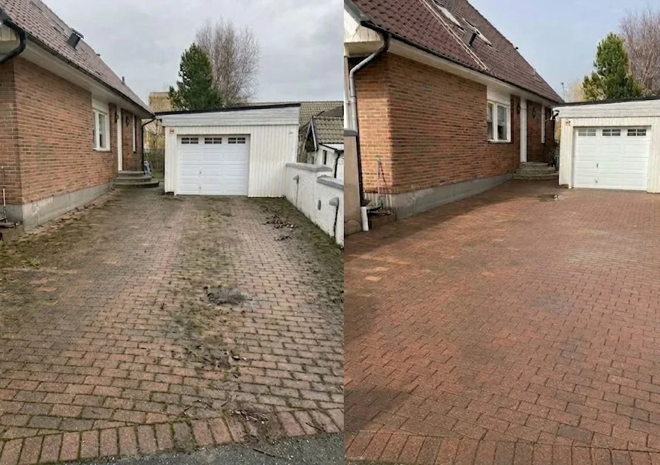
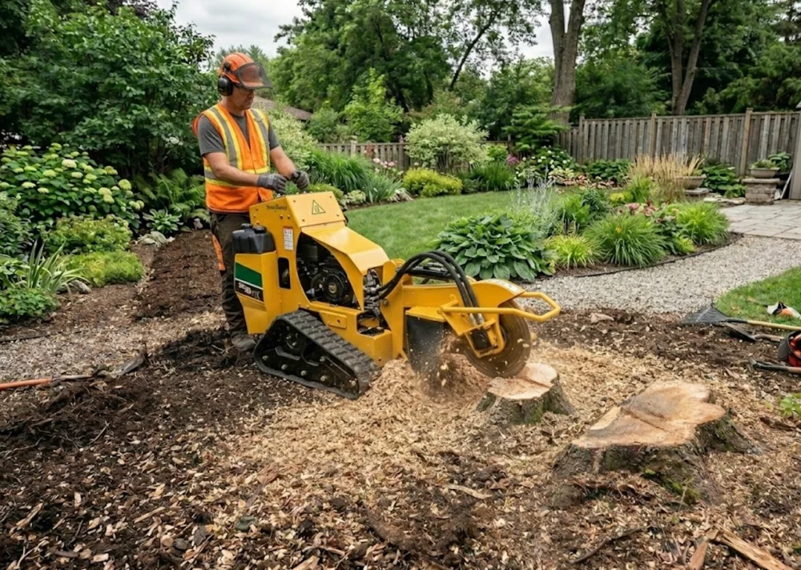
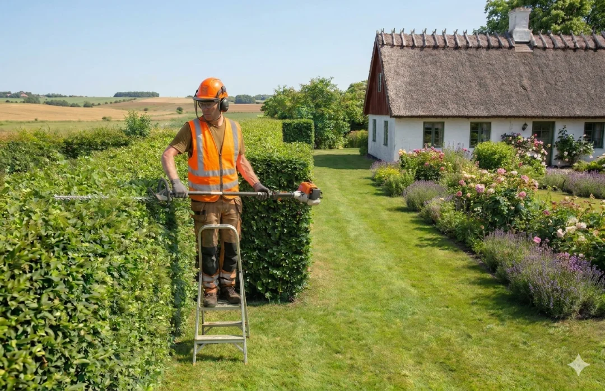
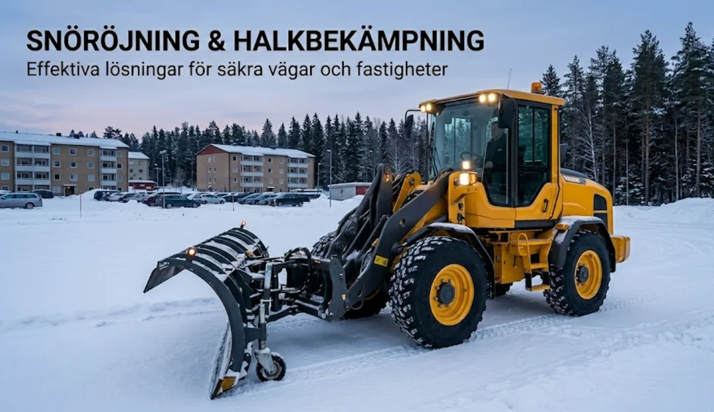

Vi tar bort år av mossa, alger och smuts och låter ytorna se nya ut igen – uppfarter, altaner, murar och fasad.

Tyngre jobb med rätt maskiner. Vi fräser stubbar, fäller mindre träd och förbereder marken för nya ytor.

Regelbunden eller engångsskötsel som håller trädgården prydlig. Vi klipper, beskär och rensar med rätt teknik för varje växt.

Vi håller dina ytor säkra och framkomliga hela vintern. Teckna säsongsavtal för löpande snöröjning eller boka per tillfälle.
Berätta vad du vill ha hjälp med så föreslår vi rätt tjänst och ger ett fast pris – kostnadsfritt.